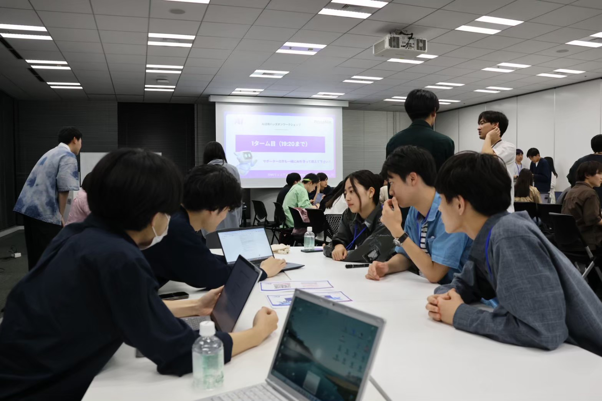
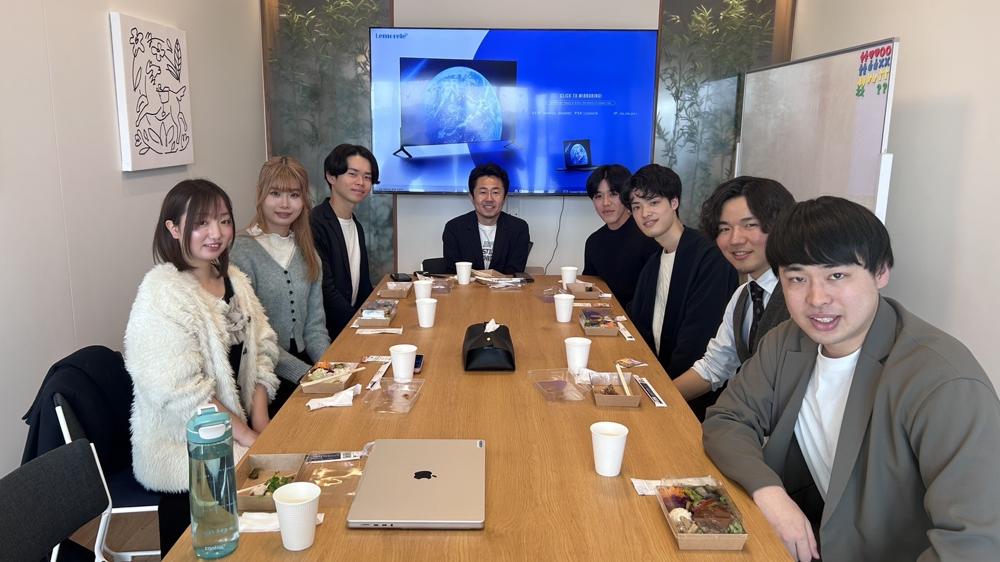
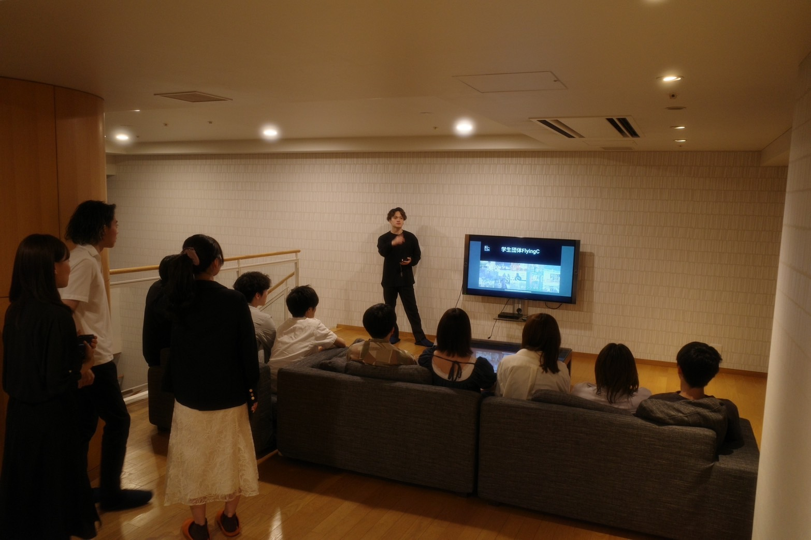
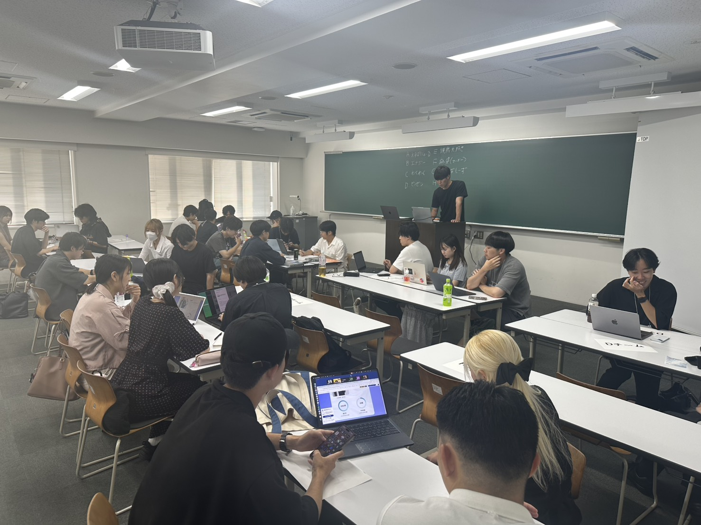

-
 WorkshopAI活用ワークショップ
ChatGPT / 自動化ツールを使った業務改善ミニ課題に挑戦。プロンプト設計→評価→改善を短サイクルで回します。
-
 Study
StudyAI勉強会
LLMの基礎、API入門、ノーコード連携などを継続開催。コード未経験でも参加しやすいハンズオン形式。
-
 Visitオフィスツアーと社長対談
少人数で企業を訪問。経営者・若手社員から意思決定のリアルを学び、働く“実感”を持ち帰ります。
-
 Marketingマーケティング勉強会
ペルソナ/カスタマージャーニー設計からSNS運用・効果測定まで。企画を世に届ける実務を学びます。
-
 Networking
Networking起業家交流会
起業家・投資家と語る少人数ダイアログ。事業づくりの葛藤や意思決定を生の声で吸収。
-
 Ideathonビジネスアイデアソン
社会課題やテックをテーマに短期集中で企画→検証。メンターのフィードバックで磨き上げます。